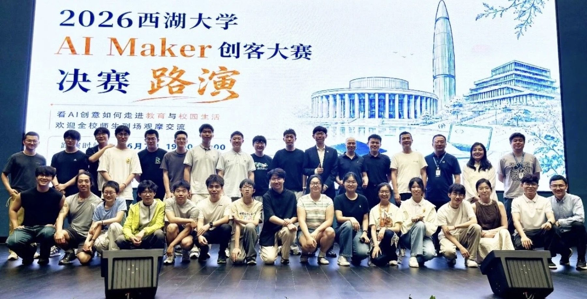
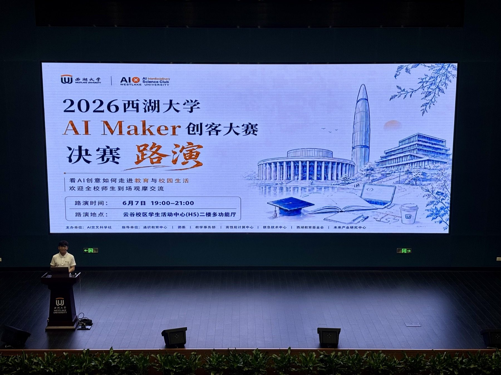
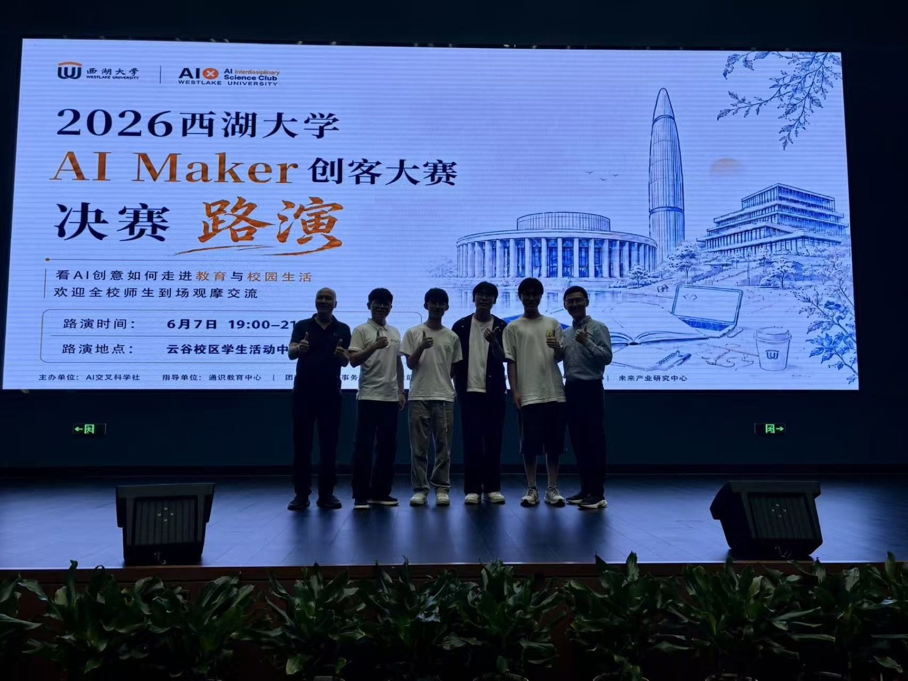

活动内容
以真实生活问题为起点，鼓励同学使用人工智能工具完成网页应用，把想法变成可以展示和使用的作品。
赛事流程
- 赛题征集与报名
- 作品提交与初审
- 决赛路演、评审与作品展示
PROJECT DIRECTIONS / 作品方向
从校园问题，走向创意实践。
应用方向概览校园生活工具
参赛团队从校园中的真实需求出发，探索 AI 在日常学习与生活中的应用。
科研与效率助手
参赛团队将模型能力融入信息整理、任务协作与个人工作流。


